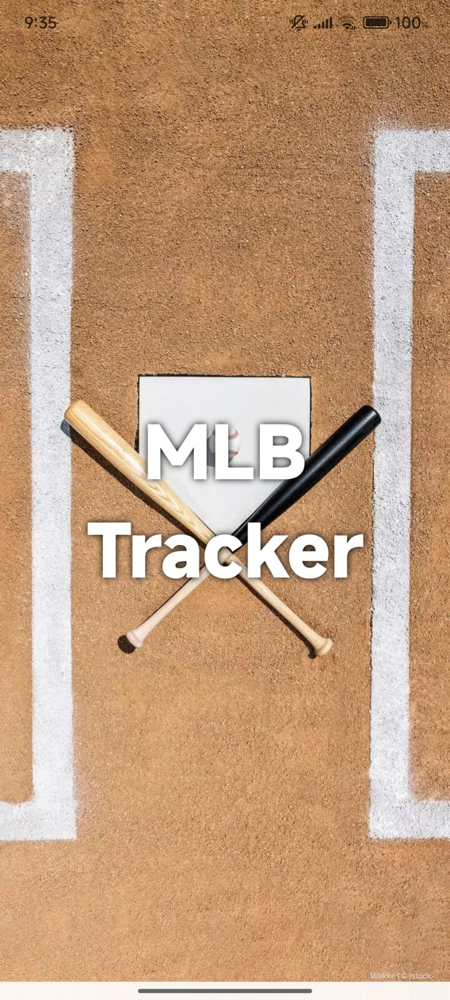
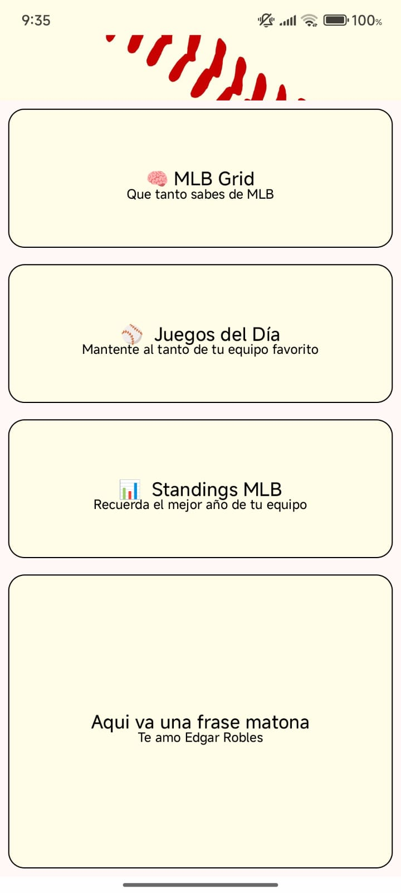
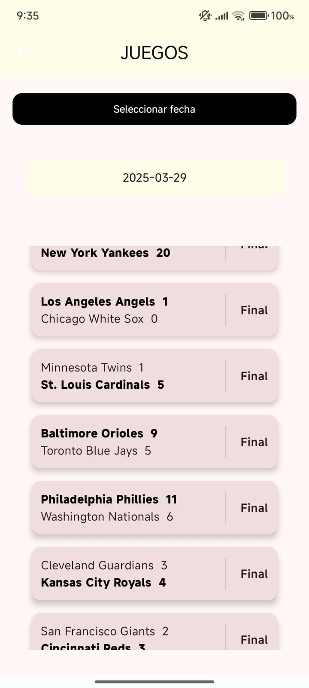
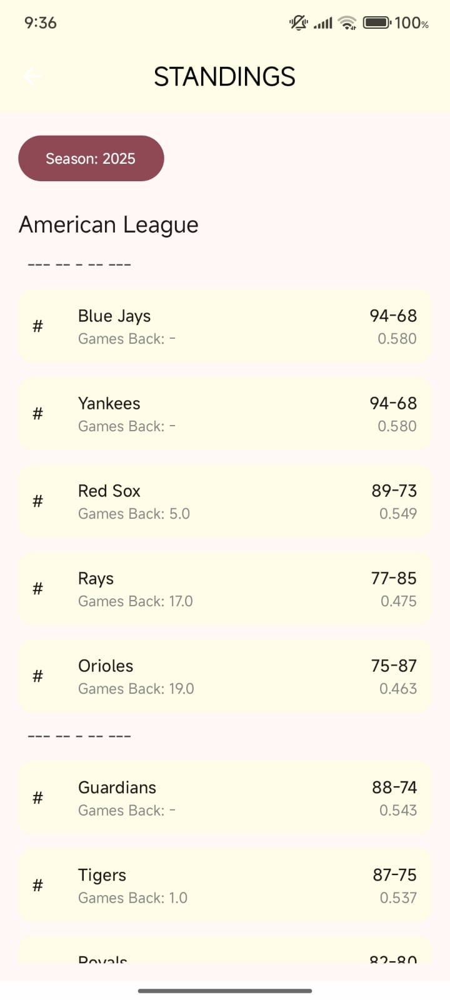
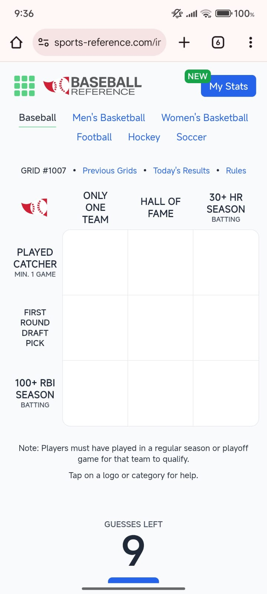

Overview
MLB Tracker is a comprehensive Android application designed for baseball enthusiasts to follow
Major League Baseball games in real-time. Developed using Kotlin in Android Studio, this app
integrates with MLB's official API to provide live scores, team
standings, and game schedules. The project was born from a passion for baseball and the desire
to create a streamlined mobile experience for tracking favorite teams and players.
The application showcases modern Android development practices including MVVM architecture,
Retrofit for API calls and Coroutines for asynchronous operations
Features
- Live Score Updates: Real-time scores and play-by-play updates for ongoing MLB games
- Team Standings: Current league standings with win-loss records and playoff positions
- Game Schedule: Complete season schedule with past results and upcoming matchups
- Historical Data: Access to past seasons' statistics and records
Gallery





Technologies Used
Kotlin
Android Studio
MVVM Architecture
Retrofit
Coroutines
LiveData
ViewModel
Glide
RecyclerView
Material Design
MLB API
Gson
Technical Implementation
- API Integration: Implemented Retrofit for making HTTP requests to MLB's REST API
with proper error handling and response parsing
- Asynchronous Operations: Used Kotlin Coroutines for non-blocking API calls and
database operations, ensuring smooth UI performance
- Repository Pattern: Created a clean data layer that abstracts data sources and
provides a single source of truth
Challenges Overcome
- API Rate Limiting: Implemented intelligent caching strategies to minimize API calls
while maintaining data freshness
- Real-Time Updates: Developed an efficient polling mechanism for live score updates
without draining battery
- Complex Data Structures: Parsed and organized hierarchical JSON responses from the
API into usable data models
- State Management: Maintained consistent UI state across configuration changes and
app lifecycle events
- Performance Optimization: Optimized RecyclerView with ViewHolder pattern and
DiffUtil for smooth scrolling